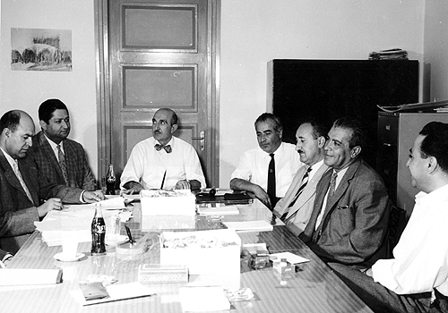

Nowkar Company
After their release from the shah's prisons, some of the supporters of Dr. Mossadiq, who resigned, were fired, or simply did not want to work in their previous government positions, decided to form a company to be able to earn a living in the new situation. The Nowkar company was established in 1955, with Mr. Ahmad Zanganeh, one of Dr. Mossadiq's ministers, as its President. Among others in the Board were Mr. Seifollah Moazami (former Minister of PTT in Mossadiq's cabinet), Mr. Ali Asghar Bashir-Farahmand (a former Director of Radio). Asghar Parsa was a member of the Board. 
At a Nowkar Co. Board meeting. From left: Mr. Talaii, Mr.
Bashir-Frahmand, Mr. Zanganeh, unknown, Mr. Azad, Mr. Nikoomanesh,
Asghar Parsa. Mr. Moazami, sitting at left, not in the picture
Another picture of the Nowkar Co. Board.